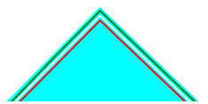
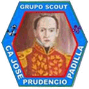

Grupo CA José Prudencio Padilla
Volver | Distrito Paraguaná - Región Falcón |
Ubicación y Contactos
Dirección: Avenida Principal, Complejo Deportivo. Santa Cruz de Los Taques.
Municipio: Los Taques
Estado: Falcón
Día y hora de reuniones: Sábados de 4:00 a 6:00 PM
Jefa de Grupo: María Fernanda Querales
Teléfonos: 0269-2770402 / 0416-3604541
Dirección de Correos: joseppadilla@scoutsfalcon.org / marifer_q89@hotmail.com
Institución Patrocinadora: Fundación Juan Elías Quevedo Castro
 
Fundado el 09 de Mayo del 2009
Significado de los colores del Grupo:
Azul, por el Mar Caribe; Verde por la Naturaleza; Blanco, por la pureza
y paz; y Rojo por la sangre derramada por los libertadores.